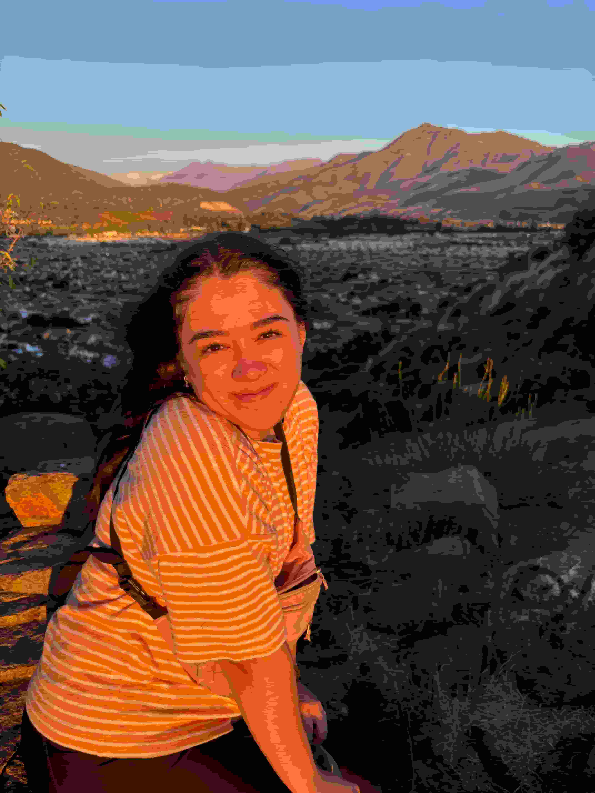
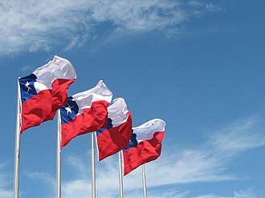

Patricia H
About me

Hello! My name is Patricia H. I am a student learning web development at BYU–Idaho. I enjoy improving my programming skills and creating simple websites. I am excited to continue learning and developing new projects throughout this course.
Chile

Chile is a long and narrow country located on the west coast of South America. It is known for its diverse landscapes, including deserts, mountains, forests, and glaciers. Chile is also famous for its rich culture, beautiful national parks, and the Andes Mountains.